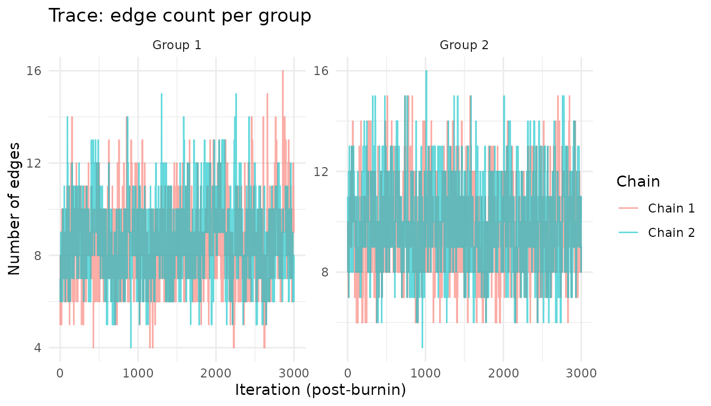
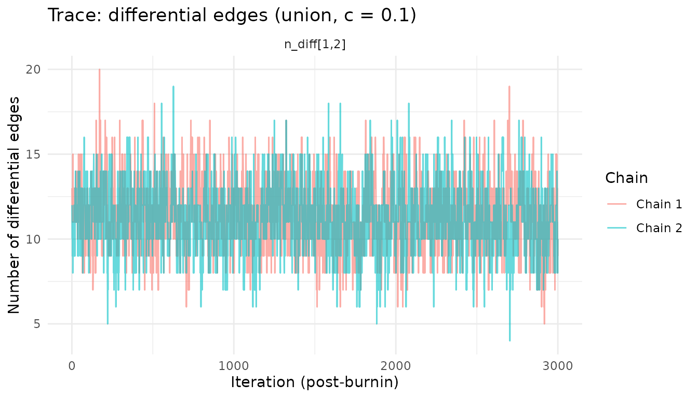
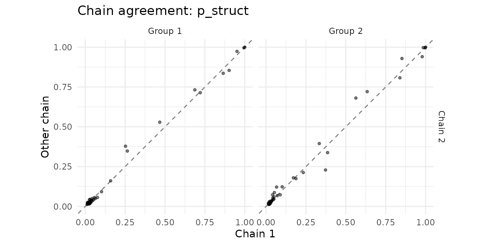
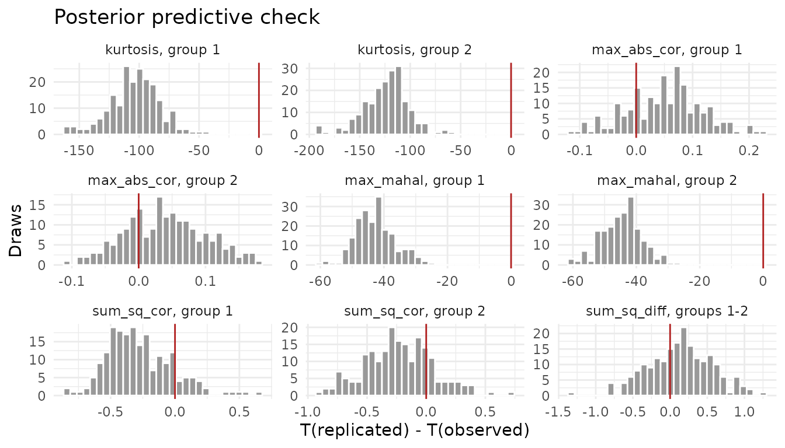

Edge probabilities are only as good as the chain that produced them.
This vignette covers the checks to run before reporting a network:
convergence, Monte Carlo error, how far the data moved each edge from
its prior, summaries of differences beyond single edges, model
comparison and posterior predictive checks. Every tool here except the
posterior predictive checks works with save_draws = FALSE:
the samplers keep small per-iteration traces and running sums for them,
without drawing extra random numbers.
library(multiGGM)
sim <- simulate_multiggm(K = 2, p = 10, n = 150, seed = 1)
fit <- multiggm_mcmc(data_list = sim$data_list, method = "ssvs", burnin = 1000,
nsave = 3000, nchains = 2, seed = 1, save_draws = FALSE,
waic = TRUE, diff_deltas = c(0.05, 0.1, 0.15))1. Convergence
Run several chains from different seeds.
mcmc_diagnostics() gathers the checks in one table:
d <- mcmc_diagnostics(fit, c = 0.1)
d
#> <multiggm_diagnostics> ssvs | 2 chain(s) x 3000 post-burn-in iterations
#>
#> Scalar summaries (flag: R-hat > 1.01 or ESS < 400 ):
#> quantity mean sd rhat ess_bulk ess_tail mcse_mean flag
#> n_edges[1] 8.439 1.615 1.006 346.643 720.151 0.087 ess
#> loglik[1] -2207.215 4.966 1.006 448.559 892.681 0.233
#> n_edges[2] 9.711 1.641 1.007 522.611 880.528 0.071
#> loglik[2] -2181.705 5.143 1.006 479.528 1641.924 0.237
#> n_diff_struct[1,2] 7.508 2.010 1.012 613.645 981.486 0.080 rhat
#> n_diff_exceed_0.1[1,2] 9.913 1.687 1.008 703.053 1223.042 0.063
#> n_diff_union_0.1[1,2] 11.262 1.943 1.008 896.069 1666.698 0.065
#> theta[1,2] 0.360 0.233 1.009 687.320 1201.888 0.009
#>
#> Edge probabilities (Monte Carlo SE; n_mcse_above: edges with SE > 0.05 ):
#> quantity max_mcse median_mcse n_mcse_above max_chain_diff
#> group: p_struct 0.034 0.003 0 0.144
#> group: p_exceed_0.1 0.034 0.002 0 0.137
#> pair: p_struct 0.030 0.007 0 0.132
#> pair: p_exceed_0.1 0.030 0.004 0 0.131
#> pair: p_union_0.1 0.033 0.006 0 0.134
#>
#> Acceptance rates:
#> step rate flag
#> gamma (between-model theta) 0.079
#> theta (within-model) 0.395
#> nu 0.470
#>
#> 2 flag(s); see above.- Scalar summaries: the number of edges per group, the number of differential edges, the log-likelihood and the graph-similarity parameters , with rank-normalized split R-hat and bulk and tail effective sample sizes (Vehtari et al. 2021). Aim for R-hat below 1.01 and ESS above about 400. Whole-graph counts are the most sensitive check: chains exploring different parts of graph space disagree on them first.
-
Edge probabilities: R-hat is not informative for a
single 0/1 edge indicator. Instead, each probability has a batch-means
Monte Carlo SE (
mcse_*columns ofedge_probs()), and with several chains the table reports the largest disagreement between chains. - Acceptance rates of the Metropolis-Hastings steps, flagged outside (0.05, 0.95).
Flags mean “run longer” (or check the model), not that the fit is wrong. With only 500 iterations per chain, this example flags most of the scalar summaries; 3000 iterations clear almost all of them.
Trace plots of the same quantities:
plot_trace(fit, "edges")
plot_trace(fit, "diff", rule = "union", c = 0.1)
Edge probabilities from each chain against chain 1 should lie on the diagonal:
plot_chain_agreement(fit, "p_struct")
Monte Carlo error near a cutoff. An edge whose probability is within about two Monte Carlo SEs of the selection cutoff could be selected or rejected by another run of the same length:
ep <- edge_probs(fit, scale = "pcor", c = 0.1)
pairs <- ep[ep$type == "pair", ]
summary(pairs$mcse_union_0.1)
#> Min. 1st Qu. Median Mean 3rd Qu. Max.
#> 0.000000 0.003671 0.005518 0.009713 0.015358 0.0329482. How much did the data say?
The priors put a probability on every edge and on every difference,
and it is not 0.5: the MRF prior favours sparse graphs, and the SSVS
spike gives
a small but nonzero prior value. A posterior probability of 0.8 means
little if the prior gave 0.6. Fit the same model with
prior_only = TRUE, which ignores the data, and compare:
prior <- multiggm_mcmc(data_list = sim$data_list, method = "ssvs", burnin = 1000,
nsave = 3000, seed = 2, save_draws = FALSE, prior_only = TRUE,
diff_deltas = c(0.05, 0.1, 0.15))
bf <- edge_bayes_factors(fit, prior, quantity = "p_union", c = 0.1)
head(bf[order(-bf$log10_bf), ])
#> type group1 group2 i j prior posterior bayes_factor log10_bf
#> 44 pair 1 2 8 10 0.2724148 1.0000000 32052.865947 4.5058669
#> 5 pair 1 2 2 4 0.2724148 0.9996667 6408.436510 3.8067521
#> 28 pair 1 2 7 8 0.2724148 0.9996667 6408.436510 3.8067521
#> 45 pair 1 2 9 10 0.2724148 0.8851667 20.574645 1.3133323
#> 3 pair 1 2 2 3 0.2724148 0.8793333 19.451674 1.2889570
#> 1 pair 1 2 1 2 0.2724148 0.7281667 7.153097 0.8544941A Bayes factor above 10 is commonly read as strong evidence for a
difference, below 1/10 as strong evidence against (Kass & Raftery
1995). The same comparison works for the whole network.
diff_count_posterior() gives the posterior of the number of
differential edges; compare it with the same count under the prior:
post_n <- diff_count_posterior(fit, rule = "union", c = 0.1)
prior_n <- diff_count_posterior(prior, rule = "union", c = 0.1)
post_n
#> <multiggm_diff_count> groups 1 vs 2 | rule: union (c = 0.1, pcor scale)
#> Differential edges: mean 11.3, sd 1.9, 95% interval [8, 15]
#> P(at least one differential edge) = 1.000
prior_n
#> <multiggm_diff_count> groups 1 vs 2 | rule: union (c = 0.1, pcor scale)
#> Differential edges: mean 12.3, sd 3.0, 95% interval [7, 18]
#> P(at least one differential edge) = 1.000The ratio of posterior to prior odds of “at least one differential
edge” is a network-level Bayes factor, but only when the prior
probability is not close to 1. With 45 edges, as here, the prior almost
surely has some difference above c; it becomes informative
for larger c or larger networks with sparser priors.
mGHS has no proper prior to sample (its diagonal prior is flat), so
prior_only is not available for it. Under its half-Cauchy
local scales the shrinkage weight
has a Beta(1/2, 1/2) prior, so
a priori, which is why its structural probabilities are weak.
3. Beyond single edges
Direction. p_up_<c> and
p_down_<c> split
into
and
,
with
:
whether a connection is stronger in group 1 or in group 2.
sel <- select_diff_edges(fit, rule = "union", c = 0.1, scale = "pcor")
dirs <- merge(sel$edges, pairs[, c("i", "j", "p_up_0.1", "p_down_0.1")])
dirs
#> i j prob q_value p_up_0.1 p_down_0.1
#> 1 2 3 0.8793333 0.0472333333 0.000000000 0.8688333
#> 2 2 4 0.9996667 0.0002222222 0.000000000 0.9978333
#> 3 7 8 0.9996667 0.0002222222 0.000000000 0.9990000
#> 4 8 10 1.0000000 0.0000000000 0.000000000 1.0000000
#> 5 9 10 0.8851667 0.0288750000 0.001166667 0.8698333Nodes. Many small changes meeting at one node can
each miss the FDR cutoff while the node as a whole has clearly changed.
node_diff_summary() counts, per iteration, the differential
edges at each node:
nd <- node_diff_summary(fit, rule = "union", c = 0.1)
nd[order(-nd$diff_degree), ][1:5, ]
#> node diff_degree p_any rewiring rewiring_rank
#> 8 8 2.917333 1.0000000 1.4956357 1
#> 2 2 2.864833 1.0000000 0.9808248 4
#> 7 7 2.653833 1.0000000 0.9860654 3
#> 3 3 2.544333 0.9811667 0.7402874 6
#> 4 4 2.296167 0.9996667 0.7816103 5diff_degree is the posterior mean number of differential
edges at the node, p_any the probability that it has at
least one, and rewiring the posterior mean of
,
a threshold-free score.
q-values. Each selected edge has a Bayesian FDR
q-value: the smallest target FDR at which it would be selected. Edges
with q_value <= alpha are exactly those selected at
alpha, so a single table serves every FDR level:
sel$edges
#> i j prob q_value
#> 1 8 10 1.0000000 0.0000000000
#> 2 2 4 0.9996667 0.0002222222
#> 3 7 8 0.9996667 0.0002222222
#> 4 9 10 0.8851667 0.0288750000
#> 5 2 3 0.8793333 0.04723333334. Comparing models with WAIC
With waic = TRUE, the samplers keep per-observation sums
of the likelihood, and compute_waic() returns the widely
applicable information criterion (lower is better). Use it to compare
fits to the same data, for example two spike variances:
fit2 <- multiggm_mcmc(data_list = sim$data_list, method = "ssvs", burnin = 500,
nsave = 500, seed = 1, save_draws = FALSE, waic = TRUE,
hyper = list(v0 = 0.05^2))
w1 <- compute_waic(fit)
#> Warning: 37 of 300 observations have p_waic > 0.4; WAIC may be unreliable.
w2 <- compute_waic(fit2)
#> Warning: 51 of 300 observations have p_waic > 0.4; WAIC may be unreliable.
w1
#> <multiggm_waic> computed from 300 observations
#> estimate se
#> elpd_waic -4422.5 40.1
#> p_waic 65.0 3.7
#> waic 8844.9 80.2
# difference in elpd and its standard error, from the paired pointwise values
d <- w1$pointwise$elpd_waic - w2$pointwise$elpd_waic
c(elpd_diff = sum(d), se = sqrt(length(d) * var(d)))
#> elpd_diff se
#> -1.194304 2.467455Judge a difference by its paired standard error, not by the standard errors of the two WAICs. A difference smaller than about twice its standard error is not meaningful. The warning flags observations with a large (above 0.4), which is common for graphical models with many parameters per observation; WAIC is then only a rough guide, and PSIS-LOO from the loo package (which needs saved draws) is more reliable. WAIC costs per iteration, so it is off by default.
5. Posterior predictive checks
Do the data look like data the fitted model would produce?
posterior_predictive_check() draws replicate datasets, one
per posterior draw of the precision matrices and with the observed group
sizes, and compares discrepancy statistics. It needs saved precision
draws; thinning to about 200 keeps them small.
(use = "mean" gives an approximate check for fits without
draws.)
fit_d <- multiggm_mcmc(data_list = sim$data_list, method = "ssvs", burnin = 1000,
nsave = 200, thin = 10, seed = 1)
pc <- posterior_predictive_check(fit_d, sim$data_list, seed = 1)
pc
#> <multiggm_ppc> 200 posterior draws | edge statistic: pcor
#>
#> type group1 group2 statistic observed rep_mean ppp
#> group 1 NA max_abs_cor 0.404 0.465 0.845
#> group 1 NA sum_sq_cor 1.150 1.130 0.445
#> group 1 NA max_mahal 24.500 25.400 0.580
#> group 1 NA kurtosis 122.000 118.000 0.325
#> group 2 NA max_abs_cor 0.406 0.479 0.860
#> group 2 NA sum_sq_cor 1.460 1.320 0.280
#> group 2 NA max_mahal 26.900 25.600 0.355
#> group 2 NA kurtosis 126.000 119.000 0.290
#> pair 1 2 sum_sq_diff 1.970 2.030 0.545
#>
#> Edges with two-sided ppp < 0.05:
#> set flagged edges
#> group 1 0 45
#> group 2 1 45
#> pair 1-2 0 45
#> (ppp values concentrate near 0.5 under a correct model, so expect fewer than alpha x edges.)A posterior predictive p-value (ppp) is the share of replicates with a statistic at least as large as the observed one; values near 0 or 1 mark a feature the model does not reproduce.
-
max_abs_corandsum_sq_corcheck the strength of dependence in each group. -
max_mahal(largest squared Mahalanobis distance) andkurtosis(Mardia’s multivariate kurtosis) check for outliers and heavy tails. They are realized discrepancies, computed with the same precision draw for observed and replicate data. -
sum_sq_diffchecks the total difference between groups: a ppp near 0 means the observed groups differ more than the model implies, so the differences are over-shrunk. - Per edge, the same comparison for each group’s sample partial
correlation and for its difference between groups
(
pc$edges).
Here nothing is flagged, as it should be, since the data were simulated from a Gaussian model. The same structure with heavy-tailed (multivariate t) data is flagged by the outlier and kurtosis checks, while the correlation checks still pass:
set.seed(3)
tdat <- lapply(sim$Omega_list, function(O) {
Z <- matrix(rnorm(150 * 10), 150) %*% chol(solve(O))
Z / sqrt(rchisq(150, 4) / 4)
})
fit_t <- multiggm_mcmc(data_list = tdat, method = "ssvs", burnin = 1000,
nsave = 200, thin = 10, seed = 1)
pc_t <- posterior_predictive_check(fit_t, tdat, seed = 1)
pc_t$global[pc_t$global$statistic %in% c("max_mahal", "kurtosis"), ]
#> type group1 group2 statistic observed rep_mean ppp
#> 3 group 1 NA max_mahal 68.07553 25.40979 0
#> 4 group 1 NA kurtosis 221.43193 117.74417 0
#> 7 group 2 NA max_mahal 70.18315 25.61341 0
#> 8 group 2 NA kurtosis 242.39138 118.59520 0
plot_ppc(pc_t)
Heavy tails or outliers can create apparent differences between groups, and FDR control cannot detect that. Consider a transformation (for example a nonparanormal or rank-based transform), or check whether a few observations drive the selected differences.
Posterior predictive p-values are conservative: under a correct model
they concentrate near 0.5, so a correct model flags fewer edges than
alpha suggests. Many flagged edges, or extreme global ppp
values, indicate misfit; few flags do not prove fit.
6. Calibration in simulations
In a simulation study the truth is known, and
fdr_calibration() compares the posterior expected FDR of
each selection with the achieved false discovery proportion:
fdr_calibration(fit, sim, rule = "union", c = 0.1, alpha = c(0.05, 0.1, 0.2))
#> alpha n_selected expected_fdr achieved_fdr power n_true
#> 1 0.05 5 0.04723333 0.2000000 0.4444444 9
#> 2 0.10 6 0.08466667 0.3333333 0.4444444 9
#> 3 0.20 9 0.18179630 0.5555556 0.4444444 9Here the achieved FDR is above target, and the reason is instructive:
the first false discovery is edge (9, 10), whose true difference in
partial correlation is 0.06, but c = 0.1 is below the
sampling noise of a difference, about
.
Edges with true differences just under c then pass it by
chance. This is the failure described under “Choosing c” in the
edge-selection vignette; a larger c or larger samples fix
it. A single dataset with a handful of selections gives a noisy achieved
FDR, so average over many simulated datasets. Achieved FDR consistently
above the target means the edge probabilities are overconfident for that
rule and threshold. See the edge-selection vignette
(vignette("edge-selection", package = "multiGGM")) for why
the “credible interval excludes zero” rule fails this check.
References
Vehtari, A., Gelman, A., Simpson, D., Carpenter, B. & Buerkner, P.-C. (2021). Rank-normalization, folding, and localization: an improved R-hat for assessing convergence of MCMC. Bayesian Analysis, 16(2), 667-718.
Gelman, A., Meng, X.-L. & Stern, H. (1996). Posterior predictive assessment of model fitness via realized discrepancies. Statistica Sinica, 6(4), 733-760.
Watanabe, S. (2010). Asymptotic equivalence of Bayes cross validation and widely applicable information criterion in singular learning theory. Journal of Machine Learning Research, 11, 3571-3594.
Kass, R.E. & Raftery, A.E. (1995). Bayes factors. Journal of the American Statistical Association, 90(430), 773-795.